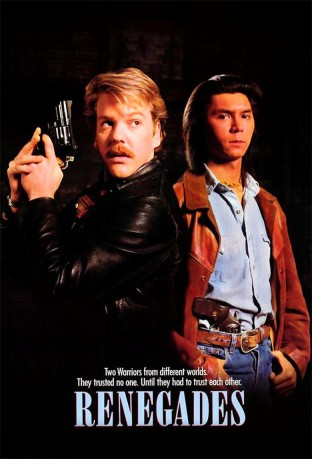

#8810 Renegades - Auf eigene Faust
Alternativ: Renegades
 
 IMDB-Wertung: 5.3 / 10
IMDB-Wertung: 5.3 / 10  Metascore: 0
Metascore: 0 
Der Cop Buster will seinen Urlaub nutzen, um als Undercover-Agent den Gangsterboss Marino zu überführen. Der Juwelenraub an dem er sich beteiligt, geht schief, es gibt einen Toten. Auf der Flucht tötet Marino in einem Museum einen Indianer und stiehlt die Heilige Lanze des Stammes. Buster, der ihn daran hindern möchte, wird von ihm ebenfalls niedergeschossen. Häuptlinssohn Hank sorgt dafür, daß Buster gesundgepflegt wird. Gemeinsam setzt das Duo die Jagd auf Marino fort und entscheidet das blutige Showdown für sich.
Jahr: 1989
Dauer: 105 Minuten
FSK: 16
Land: USA Studio: Universal PicturesTonspuren:
Untertitel: Deutsch,
Auflösung: 1080p (1920x1040) Größe: 9902 MB
Genre: Action, Thriller, Drama, Krimi
Regisseur: Jack Sholder
Drehbuch: David Rich
Soundtrack: Michael Kamen
Darsteller:
 Kiefer Sutherland als Buster McHenry
Kiefer Sutherland als Buster McHenry Lou Diamond Phillips als Hank Storm
Lou Diamond Phillips als Hank Storm Jami Gertz als Barbara
Jami Gertz als Barbara Robert Knepper als Marino
Robert Knepper als Marino Bill Smitrovich als Finch
Bill Smitrovich als Finch Clark Johnson als JJ
Clark Johnson als JJ Peter MacNeill als Denny Ransom
Peter MacNeill als Denny Ransom Floyd 'Red Crow' Westerman als Red Crow
Floyd 'Red Crow' Westerman als Red Crow- Kyra Harper als Nema
- Dee McCafferty als Cop Outside Bar
- Heidi von Palleske als Hooker In Bar
 Tom Butler als Detective Geddles
Tom Butler als Detective Geddles- Jack Blum als Keith Weinstock
 Robert LaSardo als Skinhead
Robert LaSardo als Skinhead A.C. Peterson als Big Ponytail
A.C. Peterson als Big Ponytail- Joyce Gordon als Receptionist
 Louis Ferreira als Rookie Cop
Louis Ferreira als Rookie Cop- Jacqueline Samuda als Woman Cop
 Gary Farmer als George
Gary Farmer als George Ric Sarabia als Marino's Gang Member
Ric Sarabia als Marino's Gang Member- David Mucci als Marino's Gang Member
 Matt Birman als Yuppie In Corvette
Matt Birman als Yuppie In Corvette- Réal Andrews als Cop
- T.J. Scott als Backdoor Cop (uncredited)
- Joseph Griffin als Matt
- John Di Benedetto als Corso
- Joseph Hieu als Gang Leader
- Paul Butler als Captain Blaloch
- Big Yank als Dealer
- Michael Rhoades als Small Ponytail
- Kay Tremblay als Old Woman
- Steve Whistance-Smith als Store Detective
- Andy Knott als Hotel Clerk
- Marie Romain Aloma als Saleswoman
- Dick Callahan als Bartender
- Janelle Hutchison als Annette
- Steve Wayne Lederman als Detective
- Garfield Andrews als Thug Knife
 Gene Mack als Cop in Alley
Gene Mack als Cop in Alley- Martin Neufeld als Marino's Gang Member
- Al Greene als Marino's Gang Member
- Richard Gira als Cop in Street
- Richard Sali als Cop by Salon
- Von Flores als Gangbanger
- David Lee als Gangbanger
- Gaston Poon als Gangbanger
- Paul Hill als Nema's Kid
- Kyle Anderson als Nema's Kid
- Jack Newman als Bookkeeper
- Marcelle Griffith als Hooker in Motel
Datei: X:\1989\Renegades - Auf eigene Faust (1989, FSK16, 1920x1040).mkv seit 30.04.2018
Festplatte: HD 1987-1991
 Es gibt insgesamt 54 Filme in der Gruppe '1989'
Es gibt insgesamt 54 Filme in der Gruppe '1989'